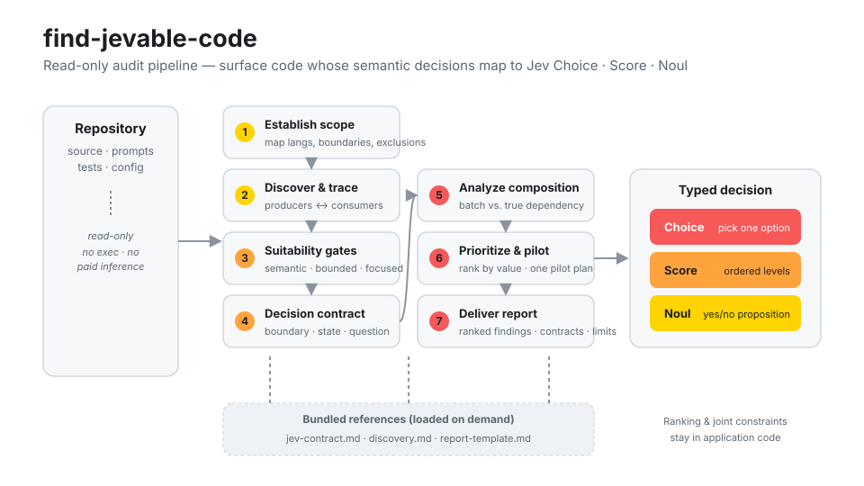

Find the code that should be a
typed Jev question
An agent skill for Claude Code and Codex. Point it at a repository and it surfaces the semantic decisions — routing, triage, relevance, escalation — that could become a Choice, Score, or Noul. Ranked, source-grounded, read-only.
Three primitives it maps to
A search lead is only jevable when the judgment is semantic, bounded, and worth measuring.
Choice
Select one supplied option.
dispatch · intent · categorizationScore
Locate content on ordered, described levels.
severity · quality · relevanceNoul
Evaluate one defined yes/no proposition.
flags · matching · escalationHow the audit works
A seven-step read-only pipeline. Nothing runs, nothing is sent to Jev, no paid inference to discover candidates.

One skill, both platforms
Claude Code and Codex read the same SKILL.md. Pick your install.
Claude Code copy into skills
# clone and drop the skill in place
git clone https://github.com/AltSlate-Labs/jevable-code.git
cp -r jevable-code/skills/find-jevable-code \
~/.claude/skills/
Codex install the plugin
# .codex-plugin/plugin.json ships in the repo
codex skill install \
https://github.com/AltSlate-Labs/jevable-code.git
Then, in a session with the skill available:
Use find-jevable-code to audit this repository for decisions suited to Jev Choice, Score, or Noul, and rank the opportunities with code evidence and concrete question contracts.
See the worked example — a toy keyword router and the audit report the skill produces for it.